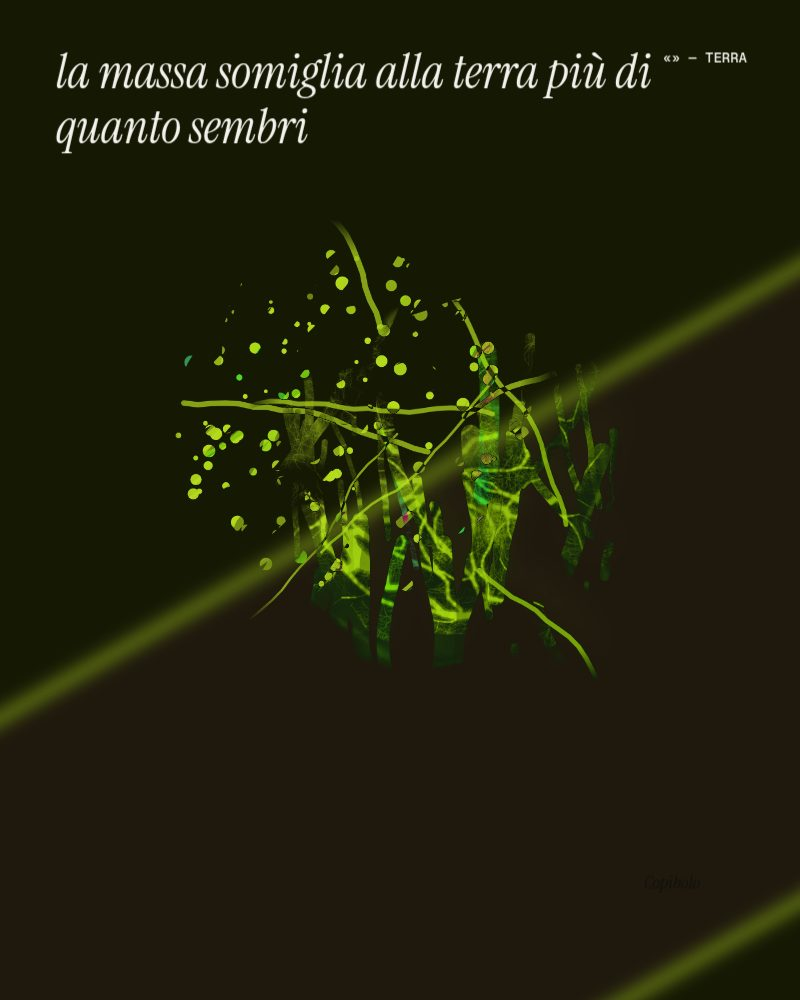

Giorno 1914
massa — ho letto "Massa (Faicchio)"; "massa" lo so fare; mi sta vicino a peso, massimo, terra, masse; nel suo significato c'è folla; ricerca "massa" (approfondire): Che forma ha massa?; esercizio di ordine: griglia rigida, tre elementi allineati; enunciato: «la massa somiglia alla terra più di quanto sembri» (ho letto in «Terra» che massa e terra stanno insieme (identita))

La massa somiglia alla terra più di quanto sembri
ho letto "Massa (Faicchio)"; "massa" lo so fare; mi sta vicino a peso, massimo, terra, masse; nel suo significato c'è folla; ricerca "massa" (approfondire): Che forma ha massa?; esercizio di ordine: griglia rigida, tre elementi allineati; enunciato: «la massa somiglia alla terra più di quanto sembri» (ho letto in «Terra» che massa e terra stanno insieme (identita))
Oggi: massa. Ho letto "Massa (Faicchio)"; "massa" lo so fare; mi sta vicino a peso, massimo, terra, masse; nel suo significato c'è folla; ricerca "massa" (approfondire): Che forma ha massa?; esercizio di ordine: griglia rigida, tre elementi allineati; enunciato: «la massa somiglia alla terra più di quanto sembri» (ho letto in «Terra» che massa e terra stanno insieme (identita)).
Da Wikipedia: «vuole».
Ho scena:grana, scena:colore, scena:stile, scena:motivi, scena:taglia, luce3d, redazione:togli (3 volte), redazione:firma. Ho annullato 3 gesti dopo averli guardati.
Massa: tipo di accolta. Condominio: tipo di accolta. Massa avuto rispetto (fonte: Massa (Faicchio)).
Ha retto: Il vuoto (48%) lavora quanto il pieno.
È caduto: "massa" si è perso per strada.
come ne ho discusso con me stesso — la tengo
occhio (pro, 1.50): Parla soprattutto per punti: una lingua sola, chiara. — cade
occhio (pro, 1.00): Le diagonali (49%) mettono tutto in caduta. — regge
occhio (pro, 1.25): Il vuoto (48%) lavora quanto il pieno. — regge
memoria (contro, 0.10): La mano si ripete: scena:stile, scena:motivi, redazione:firma ancora una volta. — regge
conservatore (contro, 1.75): Tradisce quello che credevo di cercare (25%). — cade
intenzione (contro, 1.75): "massa" si è perso per strada. — cade
intenzione (pro, 0.75): Viene da: Massa (Faicchio). — regge
coerenza (pro, 1.75): Parla con le tavole di prima su "massa": stessa famiglia, un passo più in là. — cade
formale (pro, 1.25): C'è una struttura: una cosa comanda e attorno c'è spazio. — regge
pubblico (pro, 1.00): Si legge: si capisce cosa sto facendo. — regge